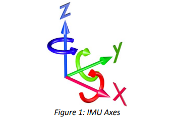
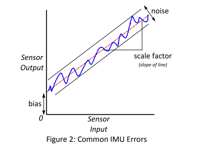

惯性测量单元Allan方差分析详解
前言
原本以为Allan方差应该是一个简单的方差计算方法，但是经过两天的各种探索和资料学习，发现这玩意的原理远比想象中的复杂。详细的公式推导需要设计到随机信号的频谱分析、IMU各种误差模型等内容。并且，Allan方差一开始用来分析原子钟晶体振荡频率的误差分析，后续这种分析方法被用到IMU的误差分析，并且IEEE也制订了相应标准（见参考资料1），这一系列的发展过程其实很长，同时也有不同的定义。以上种种，让读者放弃了摸清Allan方差的详细来龙去脉和公式推导，毕竟，工程师和数学家还是有区别的……但是关于Allan方差的解释和应用网上的博文也都不够全面，单看某一篇文章很难获取对Allan方差的直观理解（没有找到一篇很好的文章能够说明Allan方差的定义和双对数曲线不同斜率段对应的噪声项是怎么来的）。
本文对以下内容做了梳理：
- IMU的噪声项及其含义
- Allan方差的定义和推导
- 对陀螺仪的数据计算Allan方差的方法
- Allan方差双对数曲线的含义和分析
- 关键概念解读
PS: 笔者水平有限，本文只是笔者对Allan方差学习的总结，并不是一篇严格的理论推导文章
惯性测量单元（IMU：Inertial Measuremnt Unit）误差项
这部分可以参考参考资料2
IMU的输出可以看上图，典型的六轴IMU输出三个轴的加速度和三个轴的角速度。对加速度做积分可以得到速度、再做一次积分可以得到位移；对角速度积分可以得到角度。
电子器件输出都会有误差，又叫噪声。IMU的噪声项主要有以下几种：
- 零偏（Bias），单位
deg/hr,m/s^2零偏这个词似乎不太准确，因为在非零输出时也会有偏差。如果把IMU的输出当作一个遵循高斯分布的随机信号，在静止时该随机信号的均值应该是零，但是由于bias，该均值并不是0。见上面的IMU误差示意图可以较好地理解。要注意的是零偏是会随着时间改变的，因此在很多卡尔曼滤波模型中会把Bias当作一个状态量。 - 零偏可重复性（Bias Repeatability），单位
deg/hr,m/s^2每次上电零偏的稳定程度。 - 零偏稳定性（Bias Stability），单位
deg/hr/hr,m/s^2/hr有时也叫零偏不稳定性（Bias Instability）。描述零偏的稳定程度，也可以理解为零偏的噪声。（有些文章也会叫做零偏的角度随机游走）。 - 比例因子（Scale Factor） 比如比例因子是1.2,那么当真值是10m/s2的时候，IMU的输出可能是12m/s2。
- 角度随机游走（ARW:Angle Random Walk），单位：\(deg/\sqrt{hr}\),\(m/s/\sqrt{hr}\) 这是一个比较难理解的量，实际上笔者也没法完全理解。简单理解就是当信号叠加上一个白噪声之后，对该信号的积分就包含了白噪声的积分，白噪声的积分不再是一个白噪声，而是一个马尔科夫模型，也就是此时的噪声是上一时刻的噪声加上一个白噪声。那么放在这里，对于陀螺仪的输出（角速度）一般是用来做积分得到角度，那么角速度的白噪声的积分就会得到角度的偏差，因此叫做角度随机游走。有时候角度随机游走的值又叫做白噪声强度，比如在kalibr:IMU-Noise-Model中就有这样的描述： > White Noise Terms: The parameters for the "white noise" processes are often specified in the datasheet of the sensor manufacturer. A bit misleading, they are commonly denoted as angular random walk in case of the gyro, and velocity random walk for the accel
- 速率随机游走（RRW:Rate Random Walk） 与角度随机游走类似，速率随机游走可以看作是角加速度的误差积分导致的角速度的误差。速率随机游走对应的是陀螺仪在长时间下才会发生改变的误差项，因此可以用来近似当作
Bias使用。在kalibr:IMU-Noise-Model中使用速率随机游走系数当作零偏参数。
角度随机游走（ARW:Angle Random Walk）v.s. 角速率随机游走（ARRW）
这个很容易弄混淆的一个概念。对应到加速度计上应该叫速度随机游走和加速度随机游走。因为讲解Allan方差的时候一般会以陀螺仪为示例，因此在文中可能只出现角度随机游走和角速率随机游走。角速率随机游走又会被简写成速率随机游走，比如参考资料1的IEEE标准。下面这段百度百科的描述反而清晰： > 角速率传感器的性能参数中包含角度随机游走（ARW）和角速率随机游走（ARRW），前者反映了角速率信号中白噪声的特性，积分后表现为角度随机游走；后者为角速率本身的随机游走，可认为是角加速度白噪声的积分结果。
Allan方差
Allan方差又叫阿伦方差，可以用Allan方差用来描述物理器件的不同噪声参数。Allan方差相比于普通的方差具有更好的描述长时间误差的优势（具体也不太清楚）。Allan方差现在好像基本被用来当作IMU噪声标定的标准方法了。
数据方差
（上图引用自新手入门系列3——Allan方差分析方法的直观理解）
系数\(\frac{1}{N-1}\)使得这样计算出来的方差是数据方差的无偏估计（概率统计原理）。
对不同时间尺度上的误差刻画
上面的数据方差计算方法对数据的整个序列计算误差水平，无法细分出不同时间尺度上的误差波动情况。为了能够刻画不同时间周期下数据的波动情况，我们可以先对数据分块，对每块数据取平均作为该块数据的代表。假设原始数据的采样时间是\(\tau_0\)，每3个数据分成一块，则每块的间隔时间\(\tau = 3\tau_0\)。分块之后，我们再将\(M\)个数据块计算方差，最后求这个方差的数学期望，作为我们最后的方差
\[ \begin{split} \begin{array}{rcl} \sigma^2_{g}(M,\tau) &=& <\sigma^2(M,\tau)>\\ &=& <\frac{1}{M-1}\sum^M_{i=1}\big(\bar{y}_i-\frac{1}{M}\sum^M_{j=1}\bar{y}_j\big)^2>\\ \end{array} \end{split}\tag{1} \]
上式中\(<\cdot>\)表示求统计平均（期望）
Allan方差定义
Allan方差是上述通用样本方差分析在\(M=2\)时的一个特例，也就是在公式（1）中令\(M=2\)
\[ \begin{split} \begin{array}{rcl} \sigma^2(\tau) &=& <\sigma^2(2,\tau)>\\ &=& <\sum^2_{i=1}\big(\bar{y}_i-\frac{1}{2}\sum^2_{j=1}\bar{y}_j\big)^2>\\ &=& <\frac{1}{2}(\bar{y}_2-\bar{y}_1)^2>\\ &=& \frac{1}{2}<(\bar{y}_2-\bar{y}_1)^2> \end{array} \end{split}\tag{2} \]
注意，Allan方差是\(\tau\)的函数
角速度的Allan方差计算
这里只推导一种方式，根据IEEE Standard
令陀螺仪的角度输出为\(\Omega(t^\prime)\)，则角度为
\[ \theta(t)=\int^t\Omega(t^\prime)dt^\prime \]
对于离散时间形式，时间点\(t=k\tau_0,k=1,2,3,...,N\)。其中\(\tau_0\)是陀螺仪的输出时间间隔，\(N\)为总体样本数量。则，在时间段\(t_k\)到\(t_k+\tau\)之间，角速度的平均值是：
\[ \bar{\Omega}_k(\tau)=\frac{\theta_{k+m}-\theta_k}{\tau}\tag{3} \]
其中\(\tau=m\tau_0\)
将公式（3）带入上文Allan方差的定义公式（2）中可以得到：
\[ \begin{split} \begin{array}{rcl} \sigma^2(\tau) &=& \frac{1}{2}<(\bar{\Omega }_{k+m}-\bar{\Omega }_k)^2>\\ &=& \frac{1}{2\tau^2}<(\theta_{k+2m}-2\theta_{k+m}+\theta_k)^2> \end{array} \end{split}\tag{4} \]
将公式（4）的期望代替为在整个数据样本（数量为N）上求平均，可以得到如下形式
\[ \begin{split} \begin{array}{rcl} \sigma^2(\tau) &=& \frac{1}{2\tau^2(N-2m)}\sum^{N-2m}_{k=1}(\theta_{k+2m}-2\theta_{k+m}+\theta_k)^2 \end{array} \end{split}\tag{5} \]
重叠分段法计算Allan方差
这部分主要参考：Allan Variance: Noise Analysis for Gyroscopes 在公式（5）中，对每\(m\)个原始数据作为一段。切割方式有很多种，在图Allan方差定义中，每段数据都不重叠。另一种分割方法是让每段数据都重叠，如下图所示
上图中\(m=3\)，也就是每4个原始数据作为一组，组与组之前相差\(\tau_0\)长度。
Allan方差的计算方式与公式（5）保持一致。
Allan方差双对数曲线
根据公式（5），Allan方差是时间周期\(\tau=m\tau_0\)的函数，我们根据不同的\(\tau\)，计算出对应的Allan方差，并将\(log_{10}(\tau)\)作为x，\(log_{10}(\sigma(\tau))\)作为y，画出曲线，如下图：
注意，y轴是Allan方差的开根，又叫Allan
Allan方差双对数曲线可以用不同斜率的直线拟合，不同斜率部分的直线代表不同的含义。
这里讲述一下如何从双对数曲线分析信号的不同误差成分（以陀螺仪为例）
角度随机游走/白噪声强度
角度随机游走对应到双对数曲线中斜率为\(-\frac{1}{2}\)的直线，取值可以直接读取\(\tau=1\)处的值。
零偏不稳定性
零偏不稳定性对应双对数曲线中斜率为0的直线，也就是双对数曲线中最小值位置。
速率随机游走
速率随机游走对应双对数曲线中斜率为\(\frac{1}{2}\)的直线，取值时取该直线与\(\tau=3\)的交点。
上面三个误差项是我们用得比较多的误差项，画成图如下：
为什么不同的斜率对应不同的误差项？？
说实话，笔者对这个部分也是一知半解，说实话，也没有必要完全弄明白，里面涉及到时域信号分析太多基础知识了。这里根据IEEE Standard里一些内容根据自己的理解简单讲述一下。 噪声的双边功率谱密度(PSD:Power Sepctral Density)与Allan方差有如下关系：
上式中可以看作Allan方差是噪声能量经过一个\(sin^4(x)/(x)^2\)为转移函数的滤波器，这个函数是由Allan方差计算决定的。这个滤波器的带宽跟\(\tau\)有关，因此，不同的\(\tau\)对应的Allan方差来分析噪声的不同频段特性。
以白噪声为例，其功率谱密度为
将其带入功率谱密度与Allan方差关系的公式中，并进行公式中的积分，可以得到如下结果:
对上式 \(\sigma^2\big(\tau\big)=\frac{N^2}{\tau}\) 开根后求对数后可以得到
\[ log(\sigma(\tau)) = N - \frac{1}{2}log(\tau) \]
刚好可以得到一条斜率为\(-\frac{1}{2}\)的直线，且当\(\tau=1\)的时候可以得到\(N\)。这也对应了上文中从Allan方差双对数曲线中求角度随机游走的方式。
应用重点
不同的IMU建模方式需要不同的系数
强调这一点是因为imu_utils工具标定的输出结果和kalibr的模型要求是不一样的。
在GTSAM中
在GTSAM中使用IMUFactor时需要IMU的几个参数：
- IMU零偏Bias的初始值。但是这个参数可以先设置为0,后续逐步更新。（Bias是IMUFactor中的一个变量，会随时间改变）。
- IMU加速度（3轴）和陀螺仪（3轴）的噪声参数。
- IMU加速度（3轴）和陀螺仪（3轴）的Bias噪声参数。
上面2、3两点的参数可以使用imu_utils的标定结果。
其中第2点对应的是Allan方差双对数曲线（后文详细讲解）中斜率为-1/2的直线与 \(\tau =1s\)的交点（IEEE标准）。（可以直接取双对数曲线 \(\tau = 1s\)处的值，因为"据说"惯性单元在1Hz的时候对应的噪声强度主要由白噪声强度左右。这段话出自kalibr:IMU-Noise-Model，imu_utils也是直接取这一点的值） >This is only true since the noise power in most inertial sensors is dominated by "white noise" at a frequency of approximately 1Hz.
第3点描述的是Bias的不稳定性，有些地方也叫Bias随机游走。这个参数对应的是Bias [In]Stability。Bias Stability可以直接从Allan方差双对数曲线中读出来（后文详解）
之所以GTSAM需要这些参数是因为GTSAM中对IMU的建模方法跟大部分算法相同，都是把IMU的Bias当作状态，认为Bias会随着时间变化而缓慢改变（这也是较为正确的做法）。因此需要标定出Bias的稳定性。
在[kalibr]中 在[kalibr]中对IMU的建模是使用下面的公式：
\[\tilde{w}(t) = w(t)+b(t)+n(t)\]
其中\(w(t)\)代表真值，\(b(t)\)是Bias，\(n(t)\)是噪声。因此在[kalibr]中使用角度随机游走系数作为\(n(t)\)。同时使用角速率随机游走作为\(b(t)\)。一开始对这点很迷惑，为什么角速率随机游走可以用来作为\(b(t)\)。后面我在一个issue的回答中得到答案：issues63。[kalibr]对IMU的建模形式实际上是不够准确的，因为这里将\(b(t)\)当作一个恒定的量求解，实际上这是一个随着时间缓慢变化的量。而角速率随机游走则可以部分用力刻画这一偏差。事实上还是很难理解
单位
First, it is important to realize that Hertz (Hz) is defined as the inverse of seconds, which means that a noise density specification of X°/s/√Hz is exactly equivalent to an angle random walk specification of X°/√s with no conversion necessary. 出自：https://www.vectornav.com/resources/inertial-navigation-primer/specifications--and--error-budgets/specs-imuspecs
参考资料
【2】IMU Errors and Their Effects
【4】imu_utils